Le dimanche 25 décembre dernier, jour de Noël, la nouvelle tombait : Le Tupolev militaire russe Tu-154 venait de s’abimer à 2h27 (heures locales) dans la mer Noire (Mère intérieure) avec 92 personnes à son bord deux minutes et quarante-quatre secondes après son décollage de la station balnéaire de Sotchi, où il s’était ravitaillé en kérosène, avant de s’envoler pour la base aérienne de Hmeimim, près de Lattaquié, en Syrie. Il venait de de l’aérodrome de Tchkalovski, près de Moscou.
A bord de l’avion militaire se tenait 92 personnes : 8 membres d'équipage, 7 militaires, 9 journalistes (des chaînes de télévision Pervy Kanal, NTV et Zvezda), 2 hauts fonctionnaires civils et la responsable d'une organisation caritative Elizavéta Glinka (Cf Sans Frontières de Janvier 2017). Cette dernière, très connue en Russie sous le nom de «Docteur Liza», emmenait des médicaments destinés à l'hôpital universitaire de Lattaquié en Syrie. En plus de ces 28 passagers, se tenaient 65 membres (soit 1/3 des effectifs) dont le chef d’orchestre, le général Valéri Khalilov, de l’Ensemble musicale Alexandrov, plus connu sous le nom de « Chœurs de l’Armée Rouge ». Les membres de ce chœur militaire, mondialement connu, se rendaient en Syrie pour célébrer les fêtes du Nouvel An avec les troupes russes qui y sont déployées depuis septembre 2015.
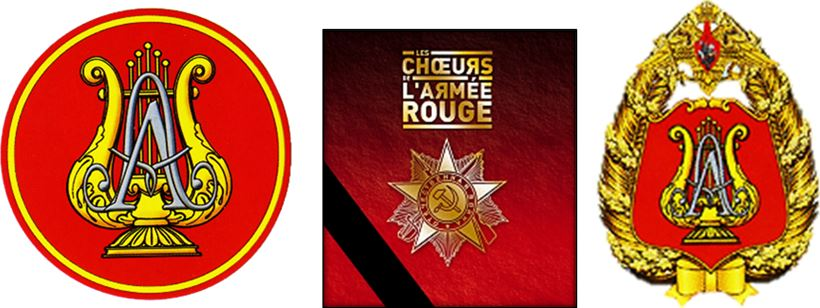
Insignes de l’Ensemble Alexandrov créé par ordre du ministre de la Défense de Russie du 26 avril 2006. Le « A » posé sur la cithare à 5 cordes rappelle le nom du créateur : le major général A. V. Alexandrov
Les chœurs de l’Armée rouge sont à la fois une carte de visite, un ambassadeur et un symbole artistique de la grande Russie. On ne sera donc pas surpris qu’une journée de deuil nationale soit décrétée par le président Vladimir Poutine dès le lendemain, soit le lundi 26 décembre 2016. Malgré ce terrible drame de la culture russe, le Général Victor Eliseev, chef d’orchestre des Chœurs de l’Armée Rouge-MVD confirmait aussitôt toutes les dates des prochaines tournées de l’ensemble vocal et notamment leur série de concerts qui se tiendront Paris, salle Pleyel, du 22 au 26 mars 2017 après l’amphithéâtre de Lyon le 21 mars 2017. Lors de ces concerts, un hommage spécial sera rendu par Les Chœurs de l’Armée Rouge MVD à leurs collègues d’Alexandrov et toutes les victimes du terrible accident. C’est en mémoire de ce drame et de ses victimes que nous avons voulu présenter, dans cet article de « SANS FRONTIÈRES », cette magnifique formation, quasi unique au monde.
QU’EST-CE QUE LES « CHŒURS DE L’ARMÉE ROUGE » ?
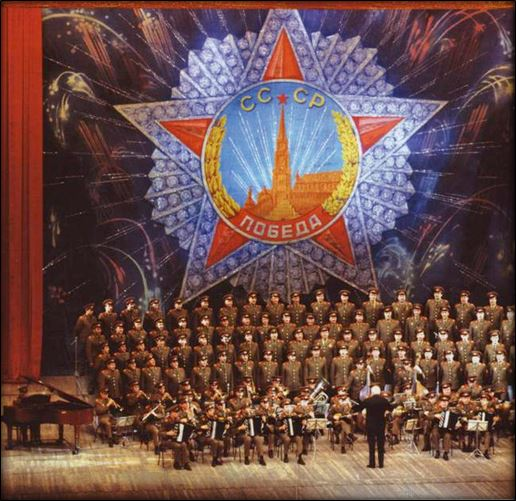
Les Chœurs dans années 1960 sont une vitrine du socialiste internationalisteL’Ensemble académique Alexandrov du ministère de la Défense russe, plus connu sous le nom de « Chœurs de l’Armée Rouge » est un ensemble vocal et musical – exclusivement masculin - créé en 1928 par le compositeur soviétique et professeur au Conservatoire de Moscou, Alexander Vasilyevich Alexandrov qui composera d’ailleurs l’hymne soviétique Russe. Cette chorale est placée sous la férule du ministère de la défense. Elle réunissait au début 12 musiciens. En 1935, la chorale comptait 135 personnes et deux ans plus tard, 274. Ils sillonnèrent le vaste territoire soviétique avec pour mission de soutenir le moral des troupes engagées dans de grands travaux d’aménagement du territoire et de faire rayonner auprès des populations tout un nouveau répertoire patriotique soviétiquo-russe.. D’année en année, la formation prend de l’ampleur et multiplie concerts et déplacements et s’enrichit de danseurs en plus des musiciens et des chanteurs. Dans les années 1960, l’ensemble vend un nombre record de disques et tient le haut des « charts » soviétique.
Pour cela, vers la fin des années 1970, le groupe recevra l’appellation officielle d’Académie, qui consiste en la plus haute certification professionnelle russe. S’inspirant de leurs succès, plusieurs autres ensembles vocaux et instrumentaux seront créés, tous engagés sous la bannière des Chœurs de l’Armée rouge. On retiendra la fondation de l’ensemble des Marins de la Baltique, créée en 1940 qui en sera l’un des plus spectaculaires exemples, comme l’avait été en 1938 l'Ensemble du MVD (Ministère des Affaires l'Intérieures).
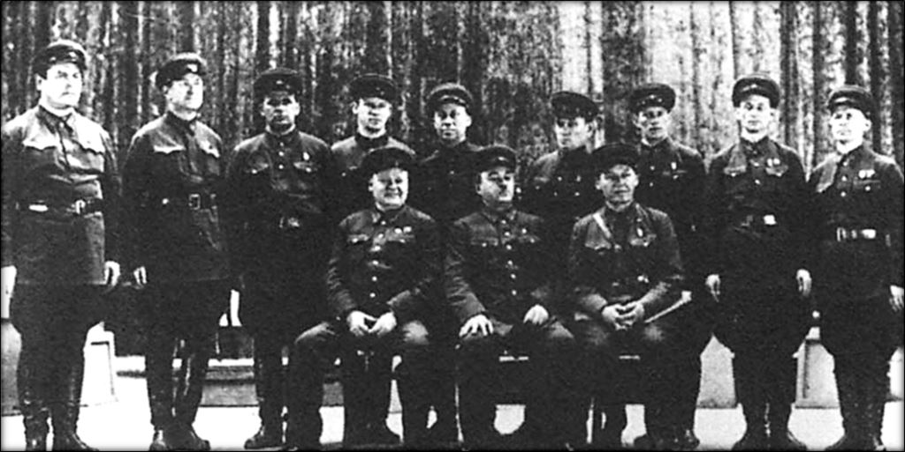
Alexandre Alexandrov entouré des premiers membres de l'Ensemble en 1929-1930 (Crédits photo : Gosteleradiofonds)
UN ENSEMBLE DE PROPAGANDE TRÈS UTILISÉ PAR STALINE
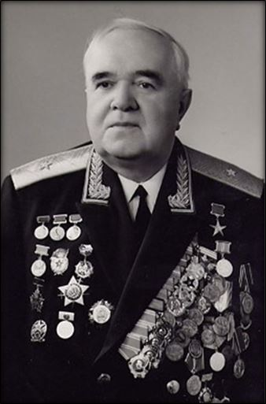
Le général major Boris Alexandrov, fils du fondateurInstrument de propagande de l’idéal soviétique, les Chœurs de l’Armée Rouge, composés d'hommes aux voix de stentor, et l’ensemble du MVD ne connaitront pas de répit, donnant environ 1.500 concerts aux soldats de l'Armée Rouge dans les zones de combats, comme dans les hôpitaux, durant toute la Seconde guerre mondiale.
Dirigé pendant 18 ans par son fondateur, le général et compositeur Alexandre Alexandrov, l'ensemble a ensuite été confié à son fils, Boris, qui resta à sa tête de 1946 à 1987. Le dirigeant actuel était Valéri Khalilov, mort dans l’accident du 25 décembre dernier. Ovationné par le public lors de ses nombreux concerts et tournées mondiale dans plus de 70 pays, l’Ensemble était l'un des rares ensembles à partir en tournée à l'étranger à l'époque soviétique ou le rideau de fer empêchait toute liberté au peuple russe.
Le Chœur de l’Armée rouge sera le seul ensemble militaire (de l’Armée de Terre) à avoir reçu « l’Etoile de Platine » sur l’allée dédiée aux grands artistes russes et plusieurs de ses interprètes reçurent le titre d’ « Artiste d'Honneur » ou « d’Artiste Emérite de la Russie » (soit l’équivalent français de l’ordre des Arts & Lettres).
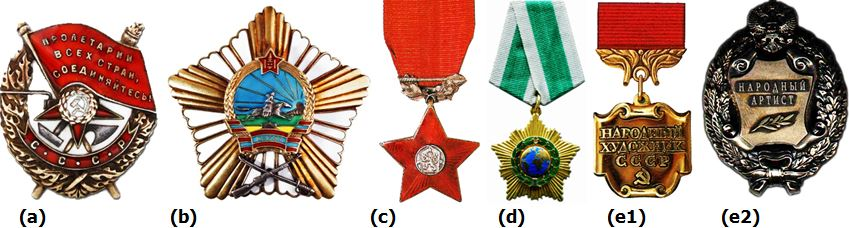
Les principales décorations officielles reçues par l’ensemble Académique Alexandrov
UN CHŒUR ARTISTIQUE PARTICULIÈREMENT HONORÉ
Les Chœurs de l’Armée Rouge seront honorés tout au long de leur vie par les plus grandes distinctions russes et étrangères. Ils recevront notamment l’ordre du Drapeau Rouge (a) « pour services exceptionnels dans les activités culturelles » le 26 novembre 1935 et l’ordre du Service au Combat (b) de Mongolie en 1964. Ils recevront aussi l’ordre de l’étoile rouge (c) de Tchécoslovaquie en 1965. Leur dernière distinction fut l’ordre de l’Amitié (d) de Russie en 2016.
Enfin, ils seront distingués du titre honorifique d’ensemble Académique en 1979 et plusieurs interprètes recevront la médaille d’Artiste émérite de Russie (e1 et e2) qui est la plus haute distinction pour les réalisations exceptionnelles dans le domaine du théâtre, de la musique, du cirque, du vaudeville et du cinéma.
On notera enfin que la chorale d’hommes recevra deux disques d’or français pour le meilleur enregistrement en 1961 et 1964 ainsi qu’un disque d’or des Pays-Bas en 1974.
UN CHŒUR PLUS SI « ROUGE » QUE CELA
De nos jours les chœurs de l’armée rouge, ne sont plus si « rouges » que cela. Son répertoire compte aujourd'hui plus de 2.000 œuvres allant des chansons folkloriques ou glorifiant l'ex URSS ou la Russie d’aujourd’hui mais aussi des musiques sacrées et religieuses ainsi que de très nombreux tubes internationaux, qu'ils interprètent avec leurs voix puissantes et accompagnés de chorégraphies acrobatiques. Durant ses 30 dernières années, l'Ensemble aura ainsi fait plus de 7.000 représentations, en plusieurs langues, devant plus de 20 millions de spectateurs !
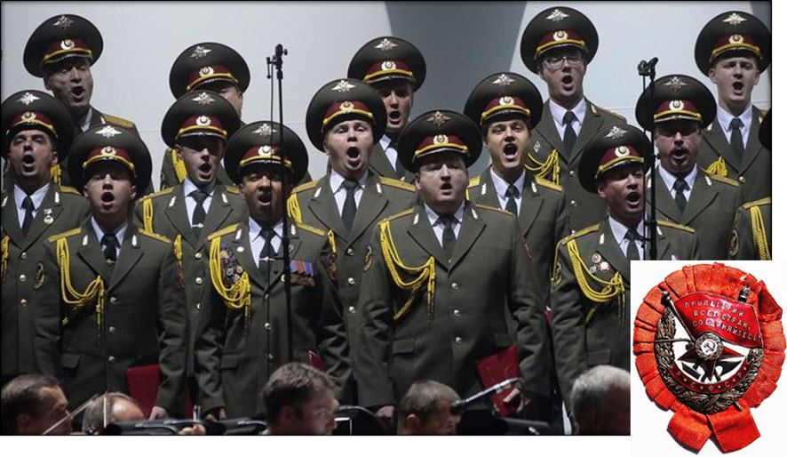
En 1978, les « Chœurs de l'Armée Rouge changeront de nom et deviendront « l'Ensemble Académique des Chœurs de l'Armée Rouge d'Alexandrov », plus communément appelé « Ensemble Alexandrov ». Les uniformes même des chanteurs changeront progressivement en 1945, en 1970 puis et en 1991. Ils porteront toujours l’uniforme de l’armée de terre soviétique (d’été en blanc et d’hiver en vert) mais avec une coupe plus occidentale et l’ajout d’aiguillette dorée sur l’épaule droite en 1991. L’ensemble est dorénavant accompagné de danseurs, de jongleurs et de gymnastes etc… transformant leurs concerts en de véritables spectacles de classe internationale !
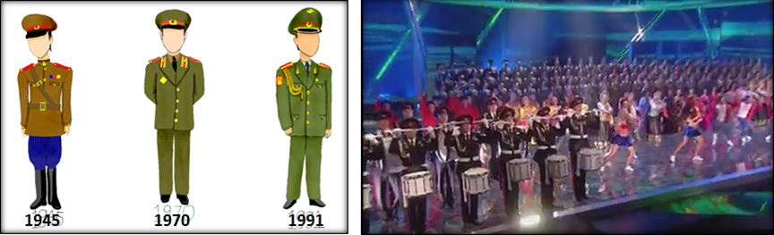
Les différents uniformes du Chœur de l’Armée Rouge et show actuel
SOUVENT IMITÉ MAIS JAMAIS ÉGALÉ
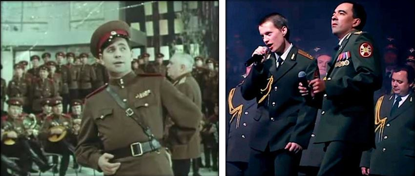
Du style ampoulé et propagandiste néo-stalinien des années 50 à un show plus international et occidentalisé du XXI° siècle, ou s’ajoute des tubes interplanétaire comme « Get Lucky » de Daft Punk, les chœurs de l’Armée Rouge se sont toujours adaptés depuis 1928, à une démarche marketing qui plait à tout les publics. Ils n’en oublient pas pour autant leur culture spécifique russe, à l’image de ce qui se fait dans toutes les formations modernes, notamment lors des grands festivals internationaux de musique militaire.
Depuis 20 ans, les Chœurs de l’Armée Rouge ont modernisé leur répertoire, reprenant des tubes internationaux et accompagnant de grandes stars internationales comme Joe Dassin, Jean-Jacques Goldmann, Céline Dion mais aussi le jeune ténor français Vincent Niclo ou la soprano américaine Julia Migenes etc…
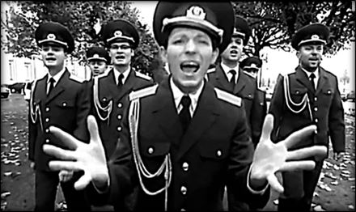
The « Russian Army Choir » et son fameux “Show must go on” de QueenAu début des années 2010, victime de leur succès, l’Ensemble Académique Alexandrov sera même imité par différentes troupes, comme les fameux « Chœurs de l'Armée Russe », issus de Saint-Pétersbourg, qui s’inscrivent dans une démarche contemporaine en reprenant des tubes internationaux tels que « Skyfall » d'Adèle ou « The show must go one » de Queen, et dont les vidéos sur Youtube sont visionnées par plusieurs centaines de milliers de followers !
Pourtant la tradition de collaborer avec des artistes contemporains et étrangers n’est pas nouvelle pour l’Ensemble Alexandov. Dès 1967, les Chœurs de l’Armée Rouge avaient pris l’habitude de réaliser de nombreuses tournées avec, notamment, la chanteuse française Mireille Mathieu (fort connue et appréciée en Russie).
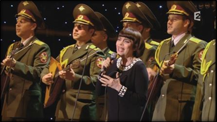
Mireille Mathieu et les ChœursElle interprétera d’ailleurs l’hymne national russe, sur la place rouge de Moscou lors du festival de musique militaire en septembre 2012 dernier.
Très liée à cet ensemble, l’artiste française déclarera d’ailleurs après le mortel accident d’avion, qu’elle était « bouleversée par cette tragédie qui endeuille le monde de la musique » Et qu’elle avait « Enormément de chagrin. Mon cœur, mes pensées vont à leurs familles et à la Russie. Depuis presqu’un siècle, ces magnifiques voix sont un joyau de la Russie ».
En leur qualité d’ambassadeur de Russie et de membres des forces armées russes, les Chœurs de l’Armée Rouge, continuaient aussi à se produire dans des zones de conflits en chantant devant les soldats russes qu’ils soient en Afghanistan, en Yougoslavie ou en Tchétchénie.
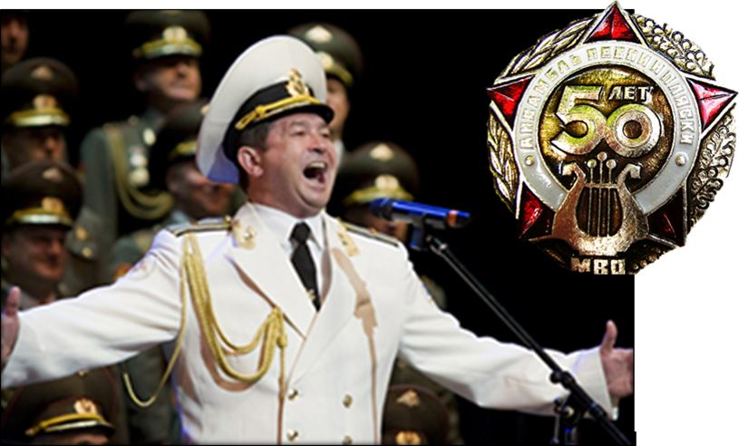
Insigne de coiffe donnée lors de la tournée britannique de 1988 à Leicester pour les 50 ans de l’Ensemble Alexandrov
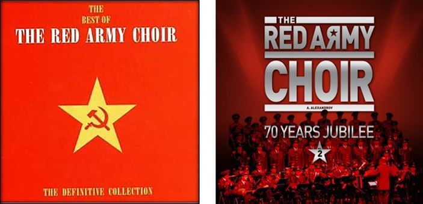
Affiches des « Red Army Choir ». Presqu’un siècle après la création de l’ensemble, les symboles communistes de la faucille et du marteau ont disparus… mais la poésie demeure
Malgré le drame qu’ils ont vécu il y a un mois, les Chœurs de l’Armée Rouge resteront à jamais gravés dans la mémoire collective comme étant l’un des plus grands ambassadeurs de la culture russe dans le monde. C’est dans cet esprit qu’ils se rendaient en Syrie pour le nouvel an. Mais cette fois ci ils n’arriveront jamais à destination et chanteront « Kalinka » en mêlant leurs voix à celles des anges du ciel…
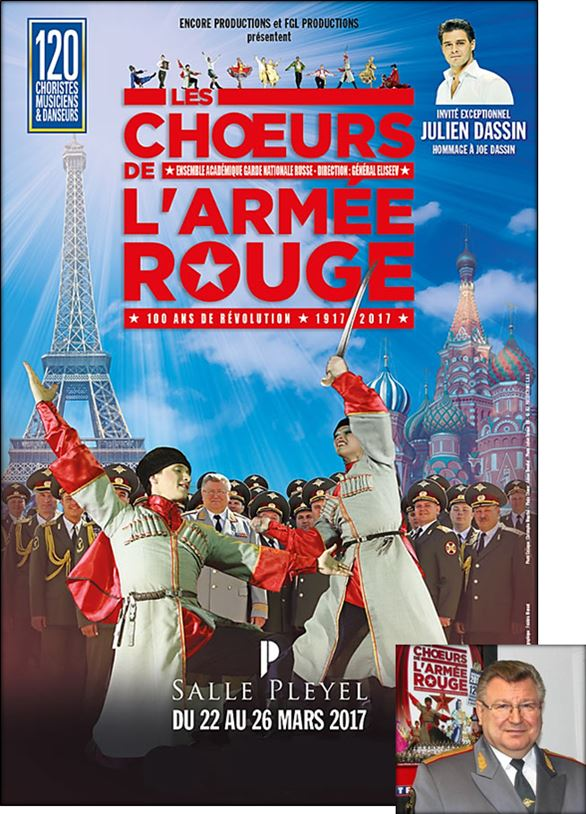
Affiche de la tournée 2017 à Paris en France des Chœurs de l’Armée Rouge ou l’Ensemble Académique de la Garde Nationale Russe sous la direction du général Eliseev
Partager cette page